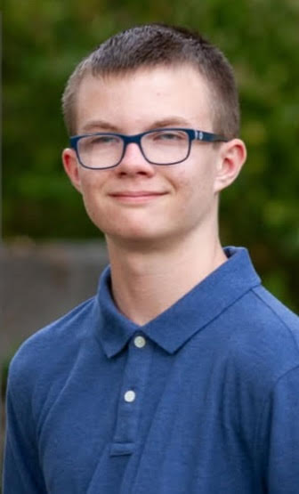
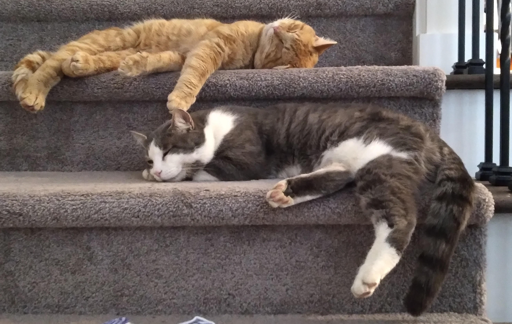

This is the main page of my website. You can find my resume and the web page about my favorite hobby above.
My name is Thomas Ard. I'm currently a freshman at the Illinois Institute of Technology. I'm originally from Kentucky, so Chicago has been a pretty major adjustment for me. There's tons more to do here and a lot more going on in the city. Below is a picture of me and a little more about me.
My current schedule leaves me lots of free time to enjoy myself, so I'll use this space to talk about some of those things. I'll start off with my cats. While I can't exactly spend time with them here (because they're at home with my family), it's one of my favorite things to do back home. There's a picture of them below to show you what they look like.
Here, though, a lot of my free time goes into gaming. Whether it be competitive or casual, I play all kind of games with friends or by myself. Some of my favorites are Minecraft, Fortnite, Rocket League, Risk of Rain 2, and especially Super Smash Bros. Ultimate (SSBU). A lot of the time, I play games with my friends from back home. That's what games like Minecraft and Fortnite are for. I play some games with other students here at IIT, though, the main game being SSBU. I play SSBU competitively, and so do lots of other students here. That's why I'm the captain of the SSBU esports team here at IIT. While we're not officially recognized by the school yet, hopefully we can be soon. If you click "My Favorite Hobby" at the top of the webpage, that's where I go into a little more depth about SSBU.